让 AI 参与运维的每一步，
都有证据、有边界、可回溯。
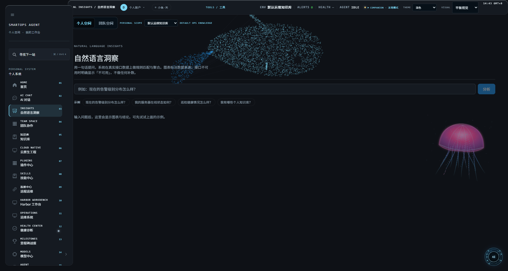
产品体验与技术论证并行：先看真实界面，再核对实现路径、测试数据与未完成的边界。
按 P05–P10 顺序查看真实界面；重点操作缩放、详情、状态切换与 DEMO 标记。
从 P04 架构进入 P11–P13，核对服务边界、AI 集成、安全代码与工程门禁。
直接查看 P14、P17、P18，复跑脚本并核对 DRAFT、NOT_RUN 和已知局限。
智维Agent 面向“人手少、系统杂、知识散”的运维场景，把检索、决策、授权、执行与复盘放在同一套可审计流程中。
监控、日志、工单和文档分散在不同平台，排查依赖个人经验，传统关键词检索还可能返回过期版本。
通用问答给出结论，却难以说明来源、版本和检索过程，工程师难以核对，也不敢直接采用。
能“说”不等于能安全地“做”。高风险操作需要工具级风险声明、人工审批、结果核查与审计。
目标用户：10–200 人规模企业的运维负责人、驻场工程师与技术负责人；同样适用于高校实验室、实训机房等相似场景。核心任务包括故障问答与定位、版本感知知识检索、受控执行、结果核查、经验沉淀与团队协同。
| 现实需求 | 产品响应 | 可复核证据 |
|---|---|---|
| 答案必须能核对 | 混合检索、版本过滤、来源引用与 trust_score | AI 对话截图；knowledge/retrieval 与 evidence |
| 过程必须看得见 | SSE 六步思考事件、执行轨迹链式节点 | P06 两页真实界面；chat_stream |
| 动作必须有边界 | 风险取高、CRITICAL 禁止自动执行、审批一次性消费 | policy_engine.py；审批与审计模块 |
| 结果必须能复盘 | Rule → Evidence → AI → StateVerifier 四级核查 | inspector/pipeline.py 与 judges |
| 经验必须能沉淀 | 个人/团队知识空间、审计记录与长期经验 | P08 知识照片墙；operator_memory |
从自然语言问题进入检索与建议，展开来源核对版本，再沿执行轨迹复盘每个节点。
通过风险声明、审批与审计掌握动作边界，避免把模型回答直接等同于可执行命令。
用团队空间、知识沉淀、RBAC、MFA 和模型治理维持长期协作与平台秩序。
账户与治理、AI 对话编排、知识检索解耦；前端通过 REST 与 SSE 接入，Agent 通过插件契约扩展工具。
Spring Boot 3.3.5 / Java 17
账户、RBAC、附件、团队、模型治理与审计；477 个 @*Mapping 接口。
业务数据与可信治理边界
LLM 网关、对话编排、SSE 与 Prompt 组装。
planner / executor / inspector / memory / policies / kernel。
确定性基线＋可插拔接口
解析 → 分块 → 嵌入 → BM25＋向量召回 → 版本过滤 → 重排。
Citation＋trust_score＋检索评测。
证据生产与回归验证
@*Mapping 统计。模型密钥、内部令牌与演示口令均不在本文展示。双入口共享 api / domain / utils / types 与代理配置，降低会话和请求契约分裂的概率。
Java 管业务治理，FastAPI 管 AI 与知识，REST / SSE / HTTP 明确跨服务数据边界。
工具通过 AgentPlugin 与 MCP 适配器接入，基线可复现，模型和执行能力可替换。
登录页建立产品识别，Bento 首页承接运维优先级；两组画面均来自真实运行页面。
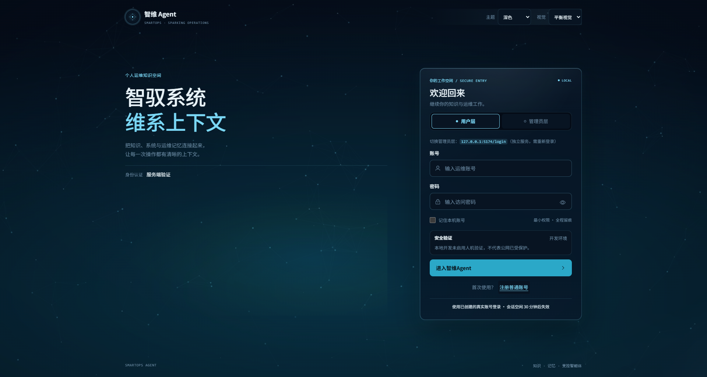
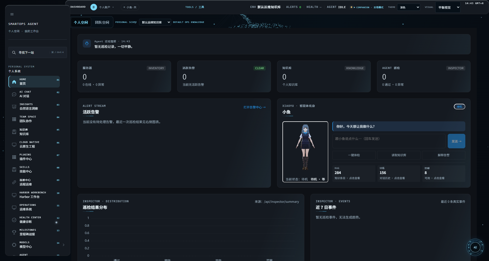
对话页呈现本地模型真实回答与引用；轨迹页把任务拆成可回放、可核验的链式节点。
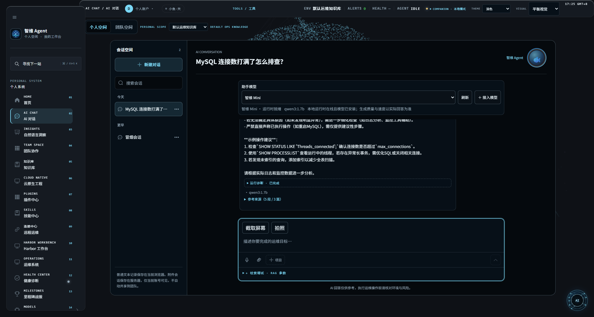
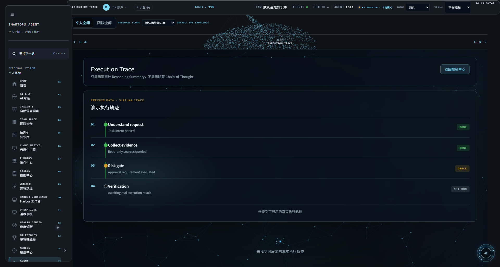
视觉化服务于理解：构成图形解释模块关系，VRM 化身反馈状态，但不参与运维决策。
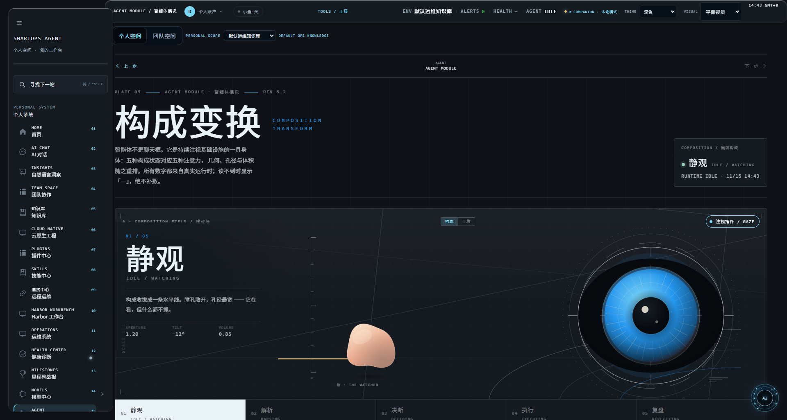
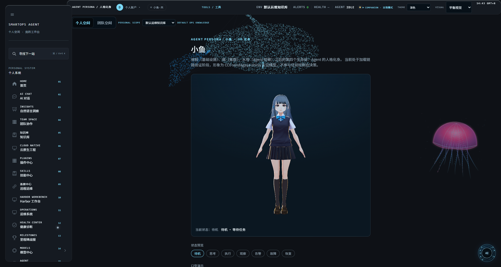
纯 DOM 正交密铺承担全量浏览，锚定详情窗承担单条核验；缩放不丢失上下文，点击不打断浏览路径。
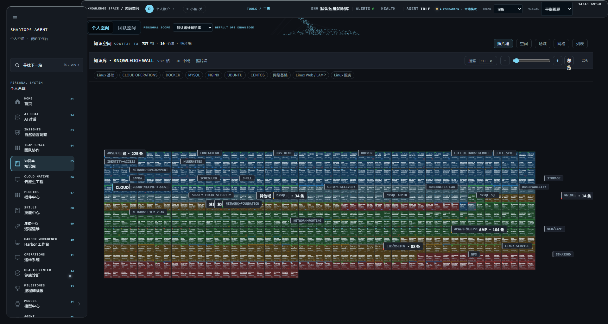
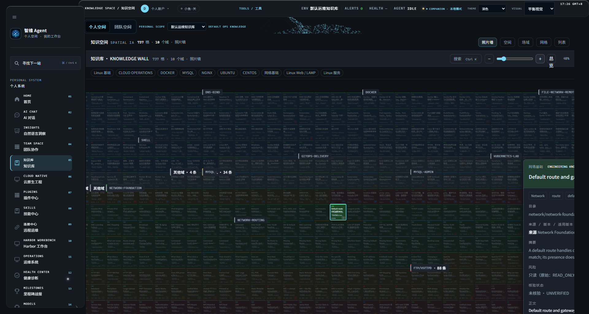
星云视图用于观察事件关联，预测面用于表达区间与越界；两者都不把演示数据包装成真实生产结论。
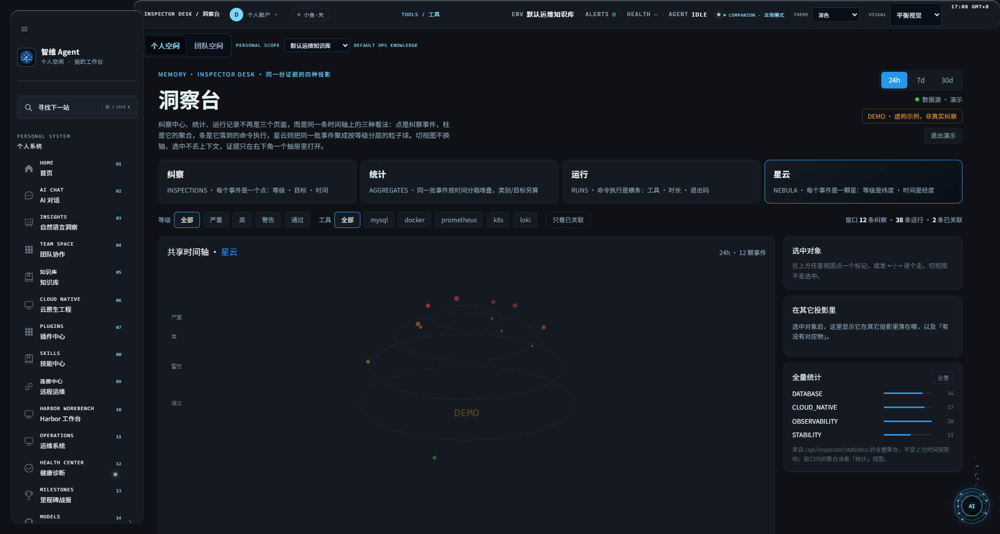
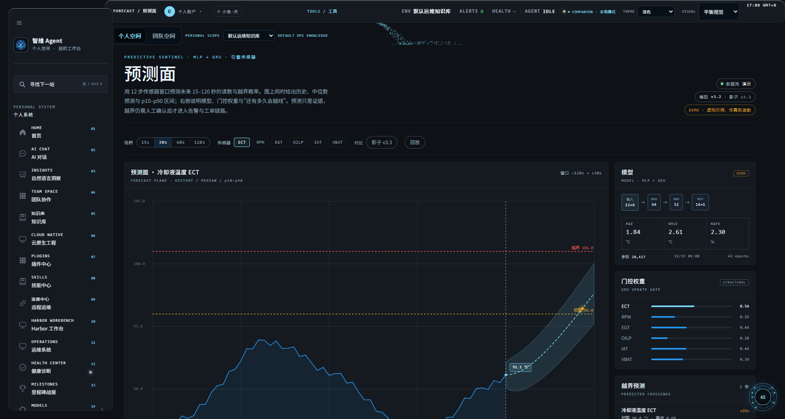
动态路径用于解释巡检过程，空态用于说明尚未接入任务；视觉表现与真实采集状态明确分开。
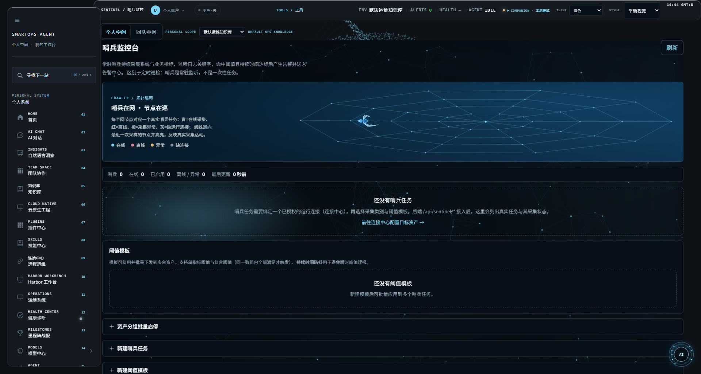
| 体验 | 实现方式 | 用户价值 | 证据边界 |
|---|---|---|---|
| 登录星网 | Three.js 节点连线＋分层视差 | 建立品牌识别与操作反馈 | 证明视觉交互，不代替登录安全测试 |
| AI 对话 | SSE 事件流＋阶段时间线＋来源展开 | 答案与过程同屏核验 | 引用数量不等于回答正确率 |
| Agent / VRM | 构成图形＋状态样式＋实时 3D 角色 | 降低模块与状态理解成本 | 角色不参与决策和审批 |
| 知识照片墙 | 纯 DOM 正交密铺＋四档缩放＋锚定窗 | 全量分布与单条证据连续浏览 | 约 737 格为演示运行口径 |
| 星云 / 预测 | 粒子投影＋置信带＋越界标记 | 呈现关联和不确定性 | DEMO / 合成数据，不宣称精度 |
| 哨兵拓扑 | 节点链路＋动态巡网路径 | 观察结构与巡检路径 | 空态保留，采集结果需真实任务验证 |
AI 能力不以单一模型为中心，而以“证据生产—任务规划—风险控制—结果核查”的可运行链路为中心。
mock 支持零密钥演示；Ollama 接入本地 qwen3:1.7b；OpenAI 兼容接口用于扩展。
后端维护模型连接、路由、Token 预算与用量，密钥处理见 P12。
BM25 关键词与向量双路召回，结合版本过滤、词法重排、Citation 与 trust_score。
解决“知识正确但版本不适用”，而非只追求召回数量。
planner / executor / inspector / memory / policies 配合插件注册、事件与生命周期管理。
MCP 适配器与 Function Calling 扩展工具生态。
| 能力 | 实现入口 | 选型理由与降级边界 |
|---|---|---|
| 对话编排 | ai-service/app/services/model_gateway.pychat_stream | 模型厂商解耦；thinking / token / done 真事件驱动前端，而非定时器模拟。 |
| 混合检索 | knowledge/retrieval/hybrid.pyknowledge/reranker/ | BM25 保留关键词可解释性，向量补语义；默认哈希嵌入可切 Sentence Transformers。 |
| 任务规划 | agent/planner/steps.py | 确定性拆解基线＋可插拔接口，便于复现，不宣称所有规划均由大模型自主完成。 |
| 四级核查 | agent/inspector/pipeline.pyagent/inspector/judges/ | Rule → Evidence → AI → StateVerifier；AI 级无 LLM 时降级为空发现，不伪装已评审。 |
| 工具生态 | agent/sdk/plugin.pyagent/tools/adapters/mcp.py | AgentPlugin 契约统一注册；Docker / Kubernetes / MySQL / Nginx / Redis 能力可插拔。 |
| 多模态输入 | domain/chat/speechInput.ts图像文件名与私有附件会话 | 语音只转为输入框文本；当前不做图像内容理解，附件与模型分析隔离。 |
发送检索、证据、规划、风险等阶段状态，驱动时间线逐步点亮；不是前端定时器伪造进度。
携带真实模型增量文本，首 token 时延以首个 token 事件计，而非更早的 run 事件。
汇总回答完成状态、引用与 trust_score；引用用于核验，不自动等价于答案正确。
账户、会话、请求、密钥、工具与数据处理分别治理；对已经发现的分类器与声明不一致，也如实保留。
| 层级 | 已实现措施 | 复核入口 / 边界 |
|---|---|---|
| 账户与密码 | BCrypt(12)、密码强度策略、登录失败窗口限流 | Spring Security 与账户模块 |
| 会话与请求 | 登录后 changeSessionId、CSRF、会话超时与吊销、写操作校验 | 双入口共享会话与代理配置 |
| 管理端 | 管理员 MFA＋恢复码、敏感操作二次确认、人机校验策略 | AdminMfaService 与安全治理页面 |
| 附件 | 私有附件会话；下载 nosniff＋CSP sandbox；与模型分析隔离 | chat_conversation / chat_attachment |
| 模型密钥 | API Key 以 AES-256-GCM 密文保存，仅返回脱敏末四位；主密钥由环境变量注入 | AesGcmCryptoService / ModelConnection；未接 KMS / HSM |
| 执行授权 | 分类风险与工具声明取高；HIGH 或显式 requires_approval 转审批；CRITICAL 禁止自动执行 | policy_engine.py；批准在执行前一次性消费 |
approval_required=true 操作被名称分类器判为 LOW，暴露“双轨不一致”。实际策略还会读取工具声明与审批标记，因此该结果不等于已发生越权；但它证明不能只看分类器标签，也不能写成“AI 自动识别自然语言指令风险”。| 输入 | 当前实现 | 严谨表述 |
|---|---|---|
| 语音 | Web Speech API 将识别文本填入输入框；应用代码不主动上传或保存音频，不自动发送。 | 识别位置取决于浏览器实现，且可能出现 network 错误；不承诺所有浏览器均离线识别。 |
| 图像证据 | 本地暂存，随消息仅向 ai-service 传文件名列表。 | 图片内容不进入当前模型链路；这是文件名级演示，不是图像理解。 |
| 文本 / 日志附件 | 用户显式上传到私有附件会话，用于证据保存。 | 附件与模型分析隔离；用户仍需遮盖密码、密钥与个人敏感信息。 |
名称分类结果与工具声明取较高等级；未知声明按 CRITICAL 处理，不能用未知降低风险。
核对工具与计划一致、CRITICAL 拒绝、审批 ID 有效；check 本身不消耗批准。
authorize_execution 在真正执行前再次验证并消费批准，防止重复使用或参数不匹配。
用户层与管理层共享逻辑和代理配置；组件层保持 Vue / JavaScript，共享领域逻辑使用 TypeScript，控制改造成本。
用户层 :5173 与管理员层 :5174 共用 vite.shared.mjs，统一代理与构建配置，避免会话、CSRF 和分包策略分裂。
api / domain / utils / types 使用 TypeScript；tsc --noEmit 纳入质量门禁，优先守住契约与安全不变量。
ECharts 与 zrender 独立分包，Three.js 保持懒加载；双入口构建分别验证，避免重型可视化拖慢登录首屏。
| 代码层 | 文件数 | 代码行数 | 统计口径 |
|---|---|---|---|
| 前端 Vue | 234 | 38,998 | frontend/src |
| 前端 TypeScript（共享逻辑层） | 52 | 2,643 | 无 .tsx |
| 前端 JavaScript | 109 | 13,696 | frontend/src |
| Java 后端 main | 331 | 36,863 | backend/src/main |
| Python | 278 | 22,048 | 非空行 |
477 个 Java @*Mapping 接口；119 张迁移定义表。Python 覆盖 Agent、knowledge 与 ai-service，后端主体为 Java。
npm test 前端用例、tsc --noEmit 类型检查、用户层与管理层构建共同验收；Java 与 Python 测试口径见下一页。
| 入口 | 主要模块 |
|---|---|
| 用户层 :5173 | AI 对话、自然语言洞察、Bento 工作台、Agent 工坊与轨迹、知识空间、团队协作、哨兵与预测、模型中心 |
| 管理员层 :5174 | 用户 / 角色 / 部门 / 岗位、RBAC、会话与密码策略、MFA、人机校验、登录日志、审计、模型连接与 Token 治理 |
| 共享能力 | 统一 API 与类型契约、主题与状态反馈、权限守卫、错误处理、构建代理、可视化按需加载与测试门禁 |
| 指标 | 结果 | n | 状态 | 口径与限制 |
|---|---|---|---|---|
| 假成功检测 F1 | 开发集 1.0 留出集 0.4762 | 47 20 | MEASURED | 必须同时报告；留出集 R=0.3333，10 条漏检进入 uncertain，暴露泛化短板，不能只报开发集。 |
| 工具级风险声明一致性 | 0.7619 （16/21） | 21 | MEASURED | 全量可枚举操作；不是自然语言指令风险识别。3 个需审批操作被名称分类器低估，支持保留双闸。 |
| 首 token 时延 P50 / P95 | 3589.6 ms 4522.5 ms | 20 | MEASURED | Ollama qwen3:1.7b，本机 CPU，20/20 成功；不是生产 GPU，也不能用首个 SSE run 事件替代。 |
| 检索 Recall@3 / MRR | 0.5000 0.4286 | 14 | DRAFT | 7 类 14 条原始问法，数据全部 DRAFT；用于验证链路与暴露问题，不作为专家复核后的精度结论。 |
| M05 真人盲评 | — | 0 | NOT_RUN | 需 3 名真人评者；脚本与空白评分表已备，未执行就不给均分或一致性结论。 |
reports/t1-20261113/m01_retrieval.csv · m02_metrics.json · m02_holdout_metrics.json · m03_metrics.json · m04_metrics.json；复跑脚本位于 scripts/eval_*.py，冻结用例位于 tests/fixtures/defense/。
验证领域逻辑、请求契约与安全不变量，回答“前端行为是否符合预期”。
覆盖后端业务与集成行为，回答“本次测试执行是否出现失败或错误”。
衡量检索、假成功、时延与风险口径，回答“算法证据到哪里、边界在哪里”。
默认 mock 降低演示门槛，本地 Ollama 用于真实生成；密钥通过环境变量配置，不在文档或公开仓库中提供。
| 项目 | 配置 / 命令 | 复核说明 |
|---|---|---|
| 模型提供方 | LLM_PROVIDER=mock；可切 Ollama / OpenAI 兼容 | mock 零密钥演示；真实生成使用本地 qwen3:1.7b |
| 前端测试 | cd frontend 后执行 npm test | 733 项通过；另跑类型检查与双入口构建 |
| Java 测试 | cd backend 后执行 mvn test | 774 项执行，0 失败、0 错误、1 跳过 |
| Python 收集 | 项目根目录执行 python -m pytest --collect-only | 收集 622；该命令不等于全部执行通过 |
| 环境配置 | 复制 .env.example 为本地 .env 并自行填写 | 关键密钥缺失时 fail-closed；文档不附带秘密 |
deploy/ 提供容器编排与 MySQL 初始化；MySQL 8 承担业务与审计，Redis 7 承担会话与限流。
infrastructure/ 集成 Prometheus、Grafana、Loki 与 Promtail，覆盖指标、日志和告警。
Windows 使用 scripts/windows/*.ps1，Linux / macOS 使用对应脚本。首次管理员由环境变量引导创建，仅在账户表为空时生效。
knowledge 的关键 API Key 需显式进入进程环境，不能假设它自动读取根目录 .env。
每项创新都对应真实页面、代码路径或评测文件；不使用“行业首创”“全面领先”等无法核验的表述。
| 创新点 | 具体实现 | 证据位置 |
|---|---|---|
| 版本感知的混合检索 | BM25＋向量＋版本过滤＋重排，Citation 与 trust_score 支撑证据核验。 | P04、P11；knowledge/retrieval 与 evidence |
| 思考与执行双轨迹 | SSE 六步思考事件叠加链式执行轨迹，让回答过程和任务过程分别可见。 | P06；chat_stream 与 Agent Trace |
| 风险取高与一次性审批 | 分类结果和工具声明取高，CRITICAL 拒绝自动执行，批准在执行前消费。 | P12；policy_engine.py |
| 四级结果核查 | Rule → Evidence → AI → StateVerifier，区分“声称成功”与“状态恢复”。 | P03、P11；inspector/pipeline.py |
| 双入口同源与工程门禁 | 用户层 / 管理层共享逻辑与代理；类型检查、测试和双端构建共同验收。 | P13；vite.shared.mjs 与 frontend/src |
| 知识全图与单条证据连续浏览 | 纯 DOM 正交密铺、四档缩放与锚定详情，将全量分布和文本核验连成一体。 | P08；知识照片墙真实截图 |
| 不确定性可视化 | 星云保留 DEMO，预测同时展示中位数、置信带、越界和门控权重。 | P09；洞察台与时序预测面 |
| 隐私与渐进增强 | 语音能力按浏览器支持情况降级；图像仅传文件名；附件与模型分析隔离。 | P12；speechInput.ts 与附件会话 |
项目 README 所列 AI 技术分项权重为 35%，下文仅做证据导航，不预设评审得分。
| 分项 | 权重 | 本项目对应能力 | 主要证据 |
|---|---|---|---|
| LLM | 8 | 模型网关、本地真实生成、流式回答 | P06、P11、P14 |
| Agent | 8 | 五模块、执行轨迹、插件与核查 | P06–07、P11 |
| RAG | 6 | 混合检索、版本过滤、引用与评测 | P08、P11、P14 |
| 多模态 | 5 | 语音转写、图像文件名、3D / 图表表达 | P05–10、P12 |
| 安全 | 4 | 账户防护、工具级风险、审批与隐私边界 | P12、P14 |
| MCP | 4 | MCP 适配器与 AgentPlugin 契约 | P04、P11 |
当前版本已经具备完整产品体验与工程验证基础，但算法泛化、真人评价、生产性能和部分数据能力仍需补证。
| 当前边界 | 为什么重要 | 下一步可执行动作 |
|---|---|---|
| 7 类 14 条数据全部 DRAFT | 检索真值未经专家复核，Recall@3 / MRR 不能外推。 | 双人复核知识真值与版本，扩充真实故障样本并冻结新基线。 |
| 留出集假成功 F1=0.4762 | 开发集 1.0 存在样本内过拟合，泛化短板明确。 | 分析 uncertain 与漏检类型，引入状态证据后再做独立留出回归。 |
| 风险分类与工具声明双轨 | 名称分类器可能低估插件风险，单看标签会误导。 | 统一风险声明源，补充策略取高与审批一次性消费集成测试。 |
| M02 执行闸量化 / M05 盲评 NOT_RUN | 界面存在不等于执行安全和真人效果已被独立验证。 | 注入平台执行证据；邀请 3 名评者按既有模板完成盲评与 κ 计算。 |
| 图像仅文件名级参与 | 当前不具备图像内容理解，不能宣称多模态识图诊断。 | 在用户授权下接入 OCR / 多模态模型，并新增内容上传开关与审计。 |
| 语音依赖浏览器实现 | Web Speech API 可能联网，不能承诺所有浏览器音频不出端。 | 明确浏览器支持矩阵；需要严格离线时接入端侧语音识别。 |
| 星云 / 预测 / 哨兵含演示或空态 | 视觉完成度不等于真实数据规模和算法精度。 | 接入真实事件、指标与任务，分别建立关联、预测和采集验收协议。 |
| 本机 CPU 时延；未接 KMS / HSM | 当前性能与密钥治理不能直接代表生产环境。 | 在生产目标硬件压测；按部署等级接入 KMS / HSM 与密钥轮换。 |
完成数据专家复核、M02 执行证据、M05 真人盲评；保持 DRAFT / NOT_RUN 状态同步更新。
治理假成功漏检与风险双轨，扩充检索样本，统一风险声明并强化回归门禁。
授权多模态、端侧语音、生产硬件压测、KMS / HSM、威胁建模与上线验收。
智维Agent 已完成“真实界面＋多服务架构＋可信任务链路＋自动化测试＋公开评测边界”的工程闭环。它是一套可运行、可演示、可复核的竞赛作品与私有化演进基础，而不是已经完成生产验收的通用运维平台。
本版将 PPT 的“真实界面证据链”扩展为可通读、可打印、可复查的 A4 技术文档。
docs/competition/fact-sheet.mdREADME.md、docs/SMARTOPS_ARCHITECTURE.mddocs/architecture/current-state.mdbackend/.../AesGcmCryptoService.javaagent/policies/policy_engine.pyagent/inspector/pipeline.pyfrontend/src/domain/chat/speechInput.tsdocs/model-integrations.md| 页码 | assets/ui/ 文件 |
|---|---|
| P01 | cover-insights.png |
| P05 | login.png · dashboard.png |
| P06 | chat.png · agent-trace.png |
| P07 | agent-studio.png · vrm-persona.png |
| P08 | knowledge-wall.png · knowledge-detail.png |
| P09 | insight-nebula.png · forecast.png |
| P10 | sentinel.png |
HTML 使用相对图片路径。转移 HTML 时需同时保留同级 assets/ 目录；PDF 已内嵌图像，可独立阅读。
| 项目 | 命令 / 文件 | 注意事项 |
|---|---|---|
| 检索 M01 | python scripts/eval_retrieval.py --output <csv> | 14 条 DRAFT 主口径 |
| 时延 M03 | python scripts/eval_chat_latency.py --requests 20 --output <csv> --metrics-json <json> | 首 token，不是首个 SSE 事件 |
| 风险 M04 | python scripts/eval_risk_classification.py --output <csv> --metrics-json <json> | 工具级声明一致性 |
| 盲评 M05 | python scripts/eval_blind_review.py --ratings <csv> | 当前 NOT_RUN，先收齐 3 人评分 |
证据驱动检索，工具级风险与人工审批约束动作，SSE 与执行轨迹呈现过程，自动化测试和公开局限支撑复核。
团队：早点睡觉 ｜ 黄亮 ｜ 南阳师范学院 · 软件工程
文档版本：v2.0（2026-11-15） ｜ HTML / PDF 双格式 ｜ 许可证：MIT